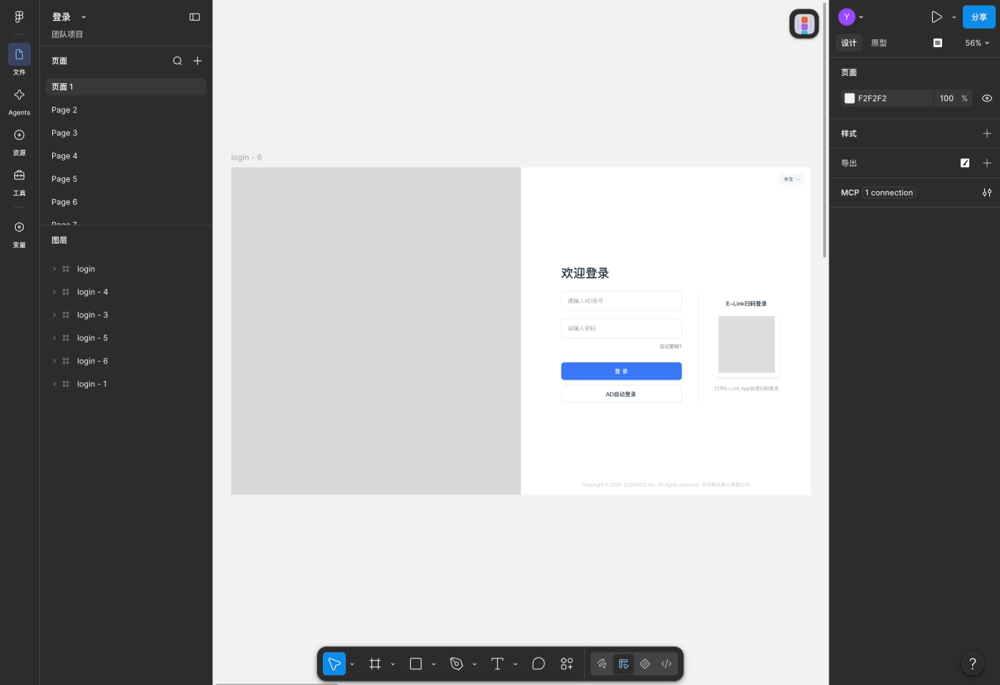
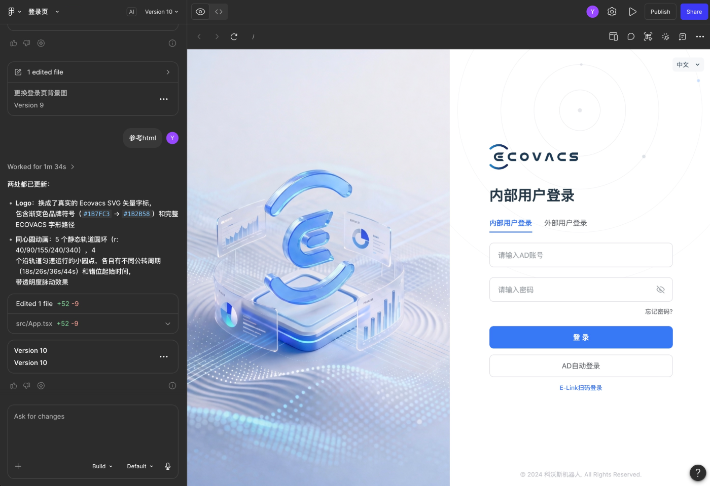
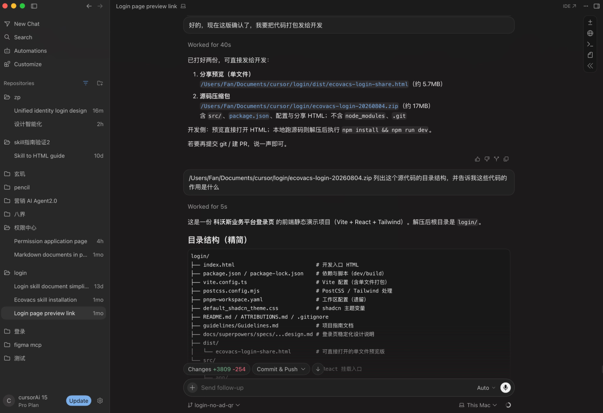
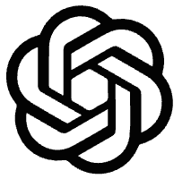
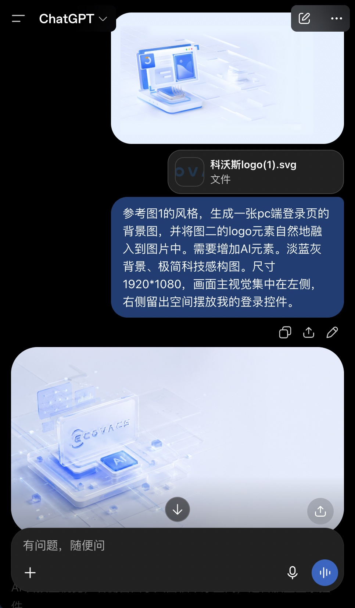
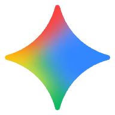
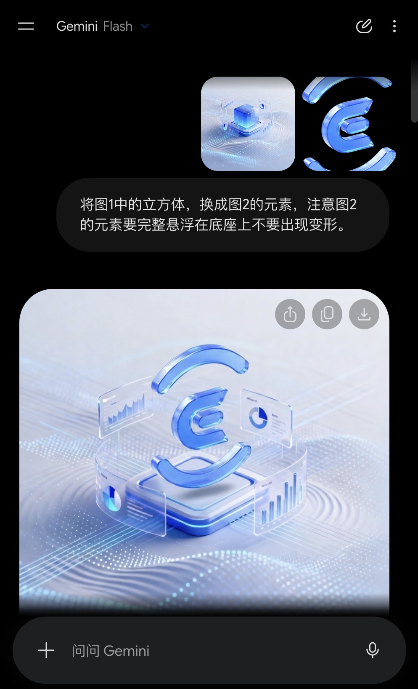

02 / PROJECT
统一身份登录页
利用以 AI 快速建立页面初稿，
再将它打磨为可交付的响应式产品界面。
以 AI 贯通设计与代码交付
先在 Figma Design 里定结构，再交给 Figma Make 生成高保真，下载代码后在 Cursor 中继续打磨交互，最终交付完整代码包。

01 · FIGMA DESIGN
Figma Design 画出草图
先锁定左右分栏、登录表单与扫码区的信息层级。

02 · FIGMA MAKE
Figma Make 生成高保真
用提示迭代视觉、动效与组件细节，快速得到可预览页面。

03 · CURSOR
Cursor 完善交互
下载代码后继续打磨状态反馈、语言切换、轨道动效，并整理交付包。
使用 AI 高效生产背景视觉图片
登录页左侧主视觉分别用 GPT Image 2.0 与 Gemini Nano Banana 2 生成候选，再筛选、微调后进入最终界面。

使用GPT Image 2.0 生成图片

使用Gemini Nano Banana 2 生成图片
其他探索视觉方案
最终上线的登录页，可直接体验
左右分栏、响应式、内部/外部登录、密码显隐、语言切换与轨道点缀动效已落地；下方为真实页面内嵌预览。
DELIVERY
开发可继续使用的代码包
包含可分享静态页与 Vite + React 源码，便于二次修改与工程接入。
login交付代码包/├─ index.html← 可分享入口页├─ src/← 页面与组件源码├─ dist/← 可分享构建结果├─ docs/← 设计说明└─ guidelines/← 实现指引